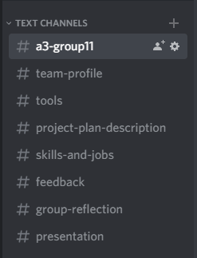

Tools
Over the course of building our PDF document and our group website, the MR GT group has used a number of development and communication tools.
Originally the group was tasked with individually creating their own profile webpage. The webpage included
some personal information, some learning styles and personality tests, information regarding their ideal job in
the IT industry and finally a project that they would like to accomplish. This website was created, modified and
maintained using Git and GitHub.
Website link for Matthew Fritz
Website link for Robert Flanagan
Website link for Gavin Smith
Website link for Tabitha Yacco
After gaining a basic understanding of using Git and GitHub for repositories and creating webpages in html the
group was ready for the second assignment, creating a group webpage. Using Git and GitHub again, our group created a team
name called MR GT and created a repository with that name. It should be noted that the groups GitHub commit trail does not
reflect the overall groups PDF effort as Rob, the organization owner, committed all files and subject matter while labelling
the other members as co-authors. This was due to some of the group members failing to join the organisation and could not
push their own work themselves. However, what the group's GitHub commit trail does reflect is the construction and design of the
group's website itself as it was built by just one member. The links below show the group's GitHub commit trail and group's GitHub repository.
Link to Groups GitHub Commit Trail
Link to Groups GitHub Repository
 In addition to this, our group decided to use the Canvas group discussion board, and used collaboration to create an Assignment 2 Task List to help break up the assignment into smaller sections and divide up the work equally. Our group have also been using Discord to communicate and share information, tips, files and some rough draft copies between each other. Another communication tool that our group used was SPARKPLUS which is a flexible self and peer assessment and feedback tool. Using this tool, we were able to provide positive and constructive feedback to each other regarding our efforts on this project. These communication tools have greatly helped our group keep focused and on task.